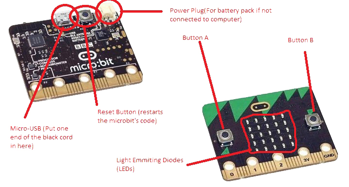

The microbit is a great piece of technology, and you are going to use it to learn to code.
Throughout the series of lessons you will make graphics, games and also make the microbit
respond to you shaking it!
You can see that it has 2 buttons, 5 input-output ports, and 5 input/output ports.
You might use these to connect things like sensors and motors. You could build a mini-robot!
This means that the possibilities are pretty much endless, and on top of this, you also have the screen.
There is the USB power port, the battery port, a couple of other important things as well, and a partridge in a pear tree.